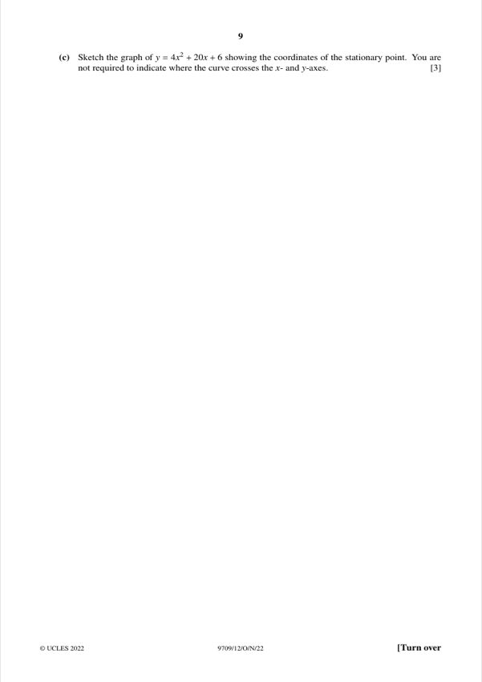
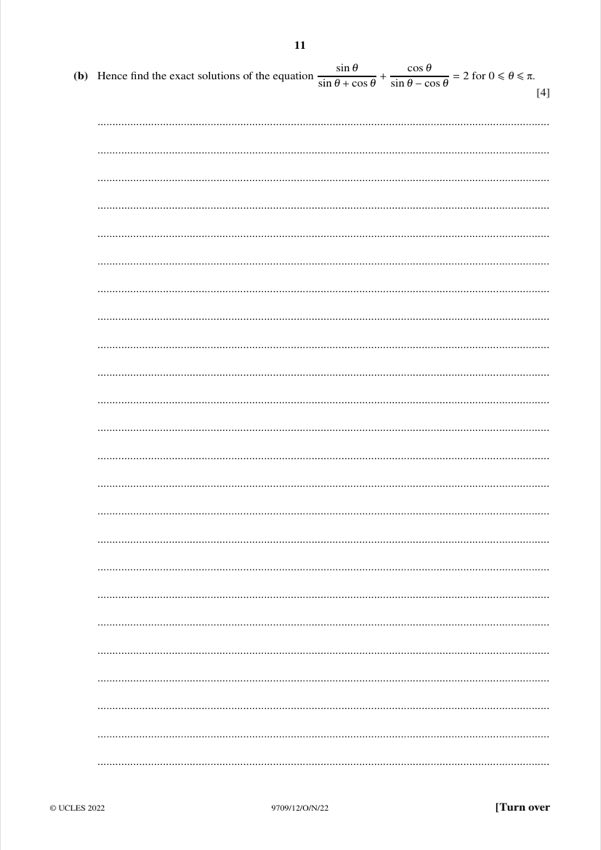
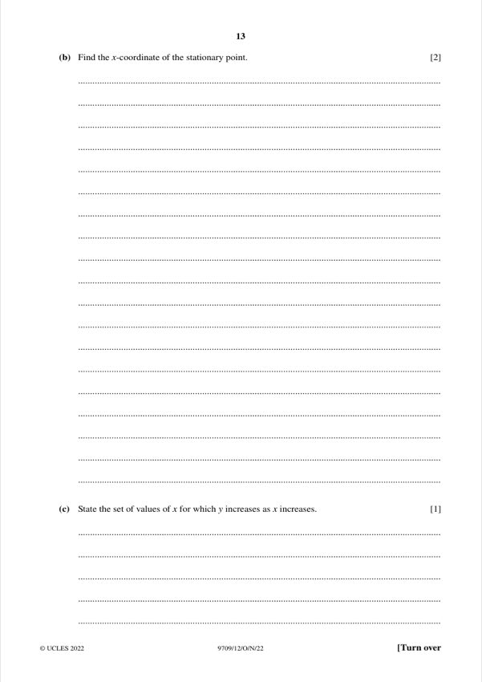
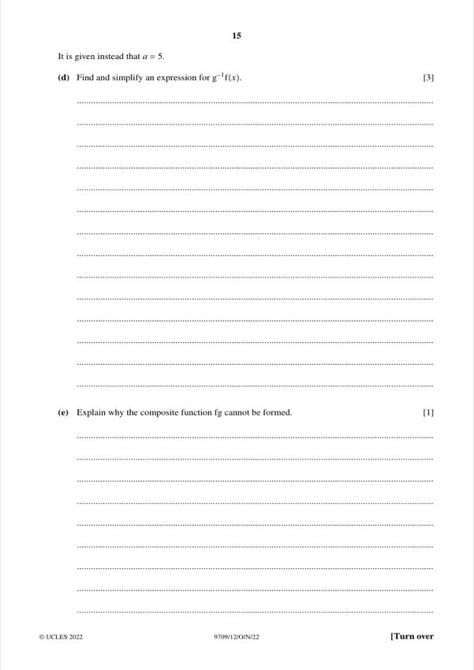
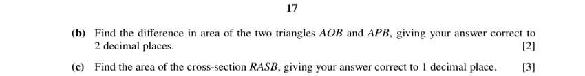
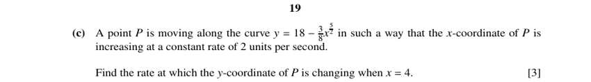
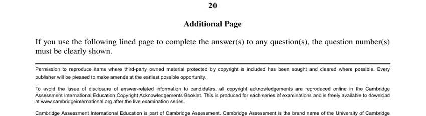

Question 1 [3 + 3]

Original paper page 3
(a) [3] Points A(5, 2) and B(10, −1). Find the equation of the perpendicular bisector of AB.
Midpoint = (15/2, 1/2)
Gradient AB = (−1 − 2)/(10 − 5) = −3/5, so perpendicular gradient = 5/3
y − 1/2 = 5/3 (x − 15/2) → 3y = 5x − 36
5x − 3y = 36
(b) [3] Find the equation of the circle with centre A which passes through B.
r² = (10 − 5)² + (−1 − 2)² = 25 + 9 = 34
(x − 5)² + (y − 2)² = 34
Question 2 [5]

Original paper page 4
The first, second and third terms of an arithmetic progression are a, 2a and a² (a > 0). Find the sum of the first 50 terms.
Common difference: 2a − a = a² − 2a → a² − 3a = 0 → a = 3 (a > 0)
d = 3, so the terms are 3, 6, 9, …
S₅₀ = 50/2 × (2(3) + 49(3)) = 25 × 153
S₅₀ = 3825
Question 3 [2 + 3]

Original paper page 5
(a) [2] Find the set of values of k for which 8x² + kx + 2 = 0 has no real roots.
k² − 4(8)(2) < 0 → k² < 64
−8 < k < 8
(b) [3] Solve 8cos²θ − 10cosθ + 2 = 0 for 0° ≤ θ ≤ 180°.
4cos²θ − 5cosθ + 1 = 0 → (4cosθ − 1)(cosθ − 1) = 0
cosθ = 1/4 or cosθ = 1
θ = 75.5° (θ = 0° is rejected, as in the mark scheme)
Question 5 [3 + 2]

Original paper page 7
(a) [3] The graph of y = f(x) is stretched in the x-direction by factor 0.5, then translated by the vector (0, 1). On the diagram, sketch the graph of y = g(x).
Each x-coordinate is halved, then every point is moved up 1 unit.
Points on the new curve are (x/2, y + 1) for each point (x, y) on y = f(x).
Sketch the transformed curve: stretch then shift up by 1 (5 points, bottom points at y = 2).
(b) [2] Find an expression for g(x) in terms of f(x).
g(x) = f(2x) + 1
g(x) = f(2x) + 1
Question 6 [3 + 3 + 3]

Original paper page 8
(a) [3] Express y = 4x² + 20x + 6 in the form y = a(x + b)² + c.
4x² + 20x + 6 = 4(x² + 5x) + 6 = 4(x + 5/2)² − 25 + 6
y = 4(x + 5/2)² − 19
(b) [3] Hence solve 4x² + 20x + 6 = 45.
4(x + 5/2)² − 19 = 45 → (x + 5/2)² = 16 → x + 5/2 = ±4
x = 3/2 or x = −13/2

Original paper page 9
(c) [3] Sketch y = 4x² + 20x + 6, showing the coordinates of the stationary point.
Minimum at x = −5/2, y = −19 (from the completed square). The curve is an upward U-shape.
Stationary point (−5/2, −19), a minimum
Question 7 [3 + 4]

Original paper page 10
(a) [3] Prove that (sinθ/(sinθ + cosθ)) + (cosθ/(sinθ − cosθ)) = (tan²θ + 1)/(tan²θ − 1).
LHS = [sinθ(sinθ − cosθ) + cosθ(sinθ + cosθ)] / (sin²θ − cos²θ)
= (sin²θ + cos²θ) / (sin²θ − cos²θ)
Divide top and bottom by cos²θ: = (tan²θ + 1)/(tan²θ − 1)
Identity proved.

Original paper page 11
(b) [4] Hence find the exact solutions of the equation in (a) equal to 2 for 0 ≤ θ ≤ π.
(tan²θ + 1) = 2(tan²θ − 1) → tan²θ = 3 → tanθ = ±√3
In 0 ≤ θ ≤ π: θ = π/3 or θ = 2π/3
θ = π/3, 2π/3
Question 8 [4 + 2 + 1]

Original paper page 12
(a) [4] dy/dx = 3x^(1/2) − 3x^(−1/2). The curve passes through (3, 5). Find the equation of the curve.
y = 2x^(3/2) − 6x^(1/2) + c
At (3, 5): 2(3√3) − 6√3 + c = 5 → c = 5
y = 2x^(3/2) − 6x^(1/2) + 5

Original paper page 13
(b) [2] Find the x-coordinate of the stationary point.
3√x − 3/√x = 0 → x = 1
x = 1
(c) [1] State the set of values of x for which y increases as x increases.
dy/dx > 0 → 3√x > 3/√x → x > 1
x > 1
Question 9 [1 + 2 + 1 + 3 + 1]

Original paper page 14
(a) [1] Find an expression for gf(x), where f(x) = x + 1/x (x > 0) and g(x) = ax + 1.
gf(x) = a(x + 1/x) + 1
gf(x) = a(x + 1/x) + 1
(b) [2] Given gf(2) = 11, find a.
a(2 + 1/2) + 1 = 11 → 2.5a = 10
a = 4
(c) [1] Explain whether f has an inverse, given f has a minimum at x = 1.
f is not one-one on x > 0: f(2) = f(1/2) = 2.5
No, f has no inverse because it is not one-one.

Original paper page 15
(d) [3] With a = 5, find and simplify g⁻¹f(x).
g(x) = 5x + 1 → g⁻¹(x) = (x − 1)/5
g⁻¹f(x) = (x + 1/x − 1)/5 = (x² − x + 1)/(5x)
g⁻¹f(x) = (x² − x + 1)/(5x)
(e) [1] Explain why fg cannot be formed.
The range of g is all real numbers, which is not inside the domain of f (x > 0).
The range of g is not contained in the domain of f.
Question 10 [3 + 2 + 3]

Original paper page 16
(a) [3] Find the perimeter of the cross-section RASB, correct to 2 decimal places.
Arc ARB (radius 2.5, angle 4π/3): 2.5 × 4π/3 = 10.47
Arc ASB (radius 2.24, angle 5π/6): 2.24 × 5π/6 = 5.86
Perimeter = 10.47 + 5.86
16.34 m

Original paper page 17
(b) [2] Find the difference in area of triangles AOB and APB, correct to 2 decimal places.
Area AOB = ½(2.5)² sin(2π/3) = 2.706
Area APB = ½(2.24)² sin(5π/6) = 1.254
Difference = 2.706 − 1.254
1.45 m²
(c) [3] Find the area of the cross-section RASB, correct to 1 decimal place.
Sector OARB = ½(2.5)²(4π/3) = 13.09
Sector PASB = ½(2.24)²(5π/6) = 6.57
Area = 13.09 + 6.57 + 1.45 (the triangle difference from (b))
21.1 m²
Question 11 [3 + 5 + 3]

Original paper page 18
(a) [3] Find the coordinates of the minimum point of y = (9/4)x² − 12x + 18.
dy/dx = (9/2)x − 12 = 0 → x = 8/3
y = (9/4)(64/9) − 32 + 18 = 2
Minimum point (8/3, 2)

Original paper page 19
(b) [5] The curves y = 18 − (3/8)x^(5/2) and y = (9/4)x² − 12x + 18 meet at (0, 18) and (4, 6). Find the shaded area.
Area = ∫₀⁴ [(18 − (3/8)x^(5/2)) − ((9/4)x² − 12x + 18)] dx
= ∫₀⁴ (12x − (9/4)x² − (3/8)x^(5/2)) dx
= [6x² − (3/4)x³ − (3/28)x^(7/2)]₀⁴
= 96 − 48 − 96/7
240/7 ≈ 34.3

Original paper page 20
(c) [3] P moves along y = 18 − (3/8)x^(5/2), with dx/dt = 2. Find dy/dt when x = 4.
dy/dx = −(15/16)x^(3/2) → at x = 4: dy/dx = −(15/16)(8) = −7.5
dy/dt = dy/dx × dx/dt = −7.5 × 2
dy/dt = −15 (decreasing at 15 units per second)